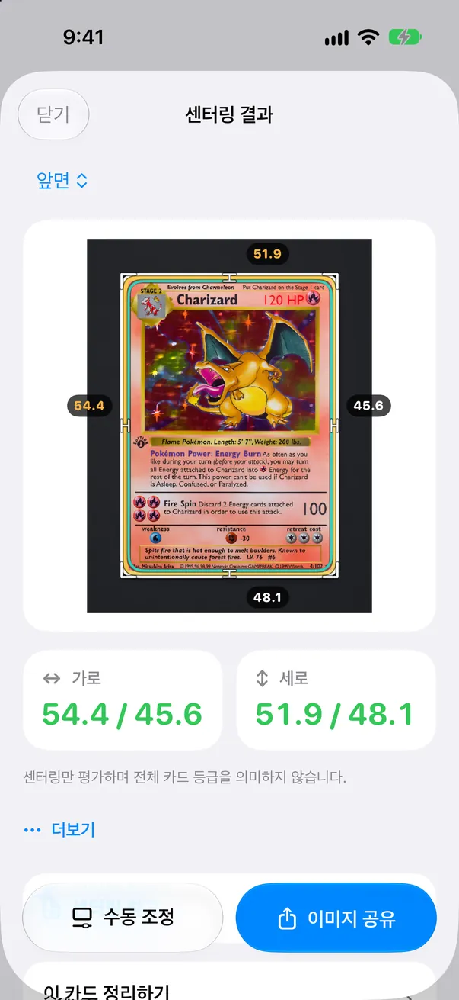

그레이딩 전에 센터링 확인
여백을 재고, 앱이 확신하지 못하는 선을 하나씩 확인한 뒤, 그레이딩 비용을 낼 가치가 있는지 판단하세요.

CenterMint는 트레이딩 카드와 스포츠 카드 수집가를 위한 iPhone 앱입니다. 슬리브에서 꺼낸 카드 사진으로 좌우·상하 센터링을 측정하고, PSA·BGS·CGC가 공개한 센터링 기준과 비교해 그레이딩 비용을 내기 전에 판단하도록 돕습니다. 독립 도구로, 센터링만 측정하며 전체 등급을 예측하지 않습니다.
앱에서는 이렇게 보입니다
작업마다 하나씩, 짧은 루프 6개. 화면은 단순화했지만 카드와 숫자는 실제입니다.
스캔하고 측정
카드 가장자리와 인쇄 테두리를 찾아 좌우·상하 비율을 보여 줍니다.
선 하나씩 확인
확대경이 선으로 갑니다. 필요하면 가장자리로 끌어 맞추고 ‘맞아요’를 누르세요.
그레이딩할 가치가 있을까?
판매 가격을 넣으면 수수료를 뺀 PSA 10·PSA 9 손익이 나옵니다.
모서리·가장자리 확대
원본 사진에서 네 모서리와 네 가장자리를 잘라 냅니다. 눌러서 크게 보세요.
그레이딩 기록
보낸 카드를 기록하고 준비 중, 발송함, 돌아옴으로 바꿉니다.
공유 스튜디오
레이아웃을 고르고 측정선을 보일지 정합니다.
브라우저에서 바로 그립니다. ‘그레이딩할 가치가 있을까?’의 가격은 예시입니다.
CenterMint로 센터링을 측정하는 방법
다시 볼 곳을 알려 주는 측정
-
1 / 5 단계
평평하게 놓고 촬영
카드를 슬리브에서 꺼내 테두리와 색이 다른 무지 매트 위에 평평하게 놓고, 고른 조명에서 촬영하거나 사진·스캔을 불러옵니다.
자동 측정은 슬리브 없는 카드만 됩니다. 슬리브, 탑로더, 그레이딩 케이스에 든 카드는 네 변을 직접 맞춰 측정합니다. 슬리브가 감지되면 알려 주고 수동 맞춤으로 전환합니다.
-
2 / 5 단계
테두리 찾기
CenterMint가 카드 바깥 가장자리와 인쇄된 안쪽 테두리를 제안합니다. 불확실한 선이 있으면 확대경으로 하나씩 안내하고 이유를 알려 줍니다.
슬리브에서 꺼낸 카드는 자동 측정. 금색·은색 테두리는 변마다 서브픽셀 단위로 맞추고, 천이나 무늬 매트 위에서도 바깥 테두리를 더 정확히 찾습니다.
-
3 / 5 단계
선 하나씩 확인
각 선을 확인하거나 조금 옮깁니다. 좌우·상하 비율이 바로 갱신됩니다.
확대경 2.0: 실제 픽셀, 픽셀 격자, 가장자리 밝기 곡선을 보여 주고 마주 보는 변을 함께 비교할 수 있습니다.
무료 버전에서도 측정에는 항상 원본 해상도 사진을 사용합니다.
-
4 / 5 단계
기준과 비교
뒷면도 측정하고 앞뒷면을 각각 PSA, BGS 또는 CGC 기준과 비교합니다.

-
5 / 5 단계
보내기 전에 확인
제출 전에 모서리·가장자리 확대를 살펴보고, 최근 판매 가격으로 ‘그레이딩할 가치가 있을까?’를 계산합니다.